最初に言っておきます！
今回は大きな観音様の話をするぞ！
何故そんな宣言を最初にするかというと冒頭が単なる愚痴だからです。
…皆さん聞いて下さい、哀しいオイラのブルースを…
とあるゴールデンウイーク、青森の八戸に行く事にした。
目的は色々あったのだが、八戸のみろく横丁と朝市が最大のお楽しみ。
あと二戸や三戸の方にはユニークなお寺があったなあ…
などと明日から始まる旅にウキウキしつつ床に就く。
で、夜中。
何だか
足が痛い。気のせいかと思ったが段々痛みが増してくる。
あれれ。おかしいな、と思いつつ出かける時間が迫ってきた。
まあ、そのうち治まるだろう、と新幹線に乗ったものの八戸に着くころには完全に
激痛モード。
寝ながら捻挫したのだろうか？そんな事ある？
駅前で予約していたレンタカーに乗り（幸い痛いのは左足だったのでオートマ車は運転できる）、真っ先に接骨院へ。
そこでテーピングをしてもらい、辛うじて歩けるようになったので、
奥入瀬渓流へ向かう事にした。
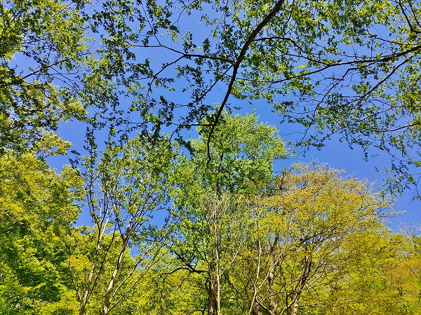
奥入瀬渓流は美しい渓流が車道からも見えるのが有名で、ここなら車中からでも眺めが楽しめるだろうという作戦である。
ちなみにこの時点で二戸や三戸にある面白そうなお寺は今回は諦めた。
山道とか絶対無理だし。
で、渓谷の入り口にある
奥入瀬渓流ホテルで休憩。
ここには
岡本太郎の作品であるブロンズ製の巨大暖炉があるのだ。
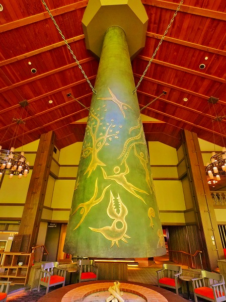
タイトルは「森の神話」。
広いラウンジの真ん中にドドーンと鎮座している。
中々の迫力だ。
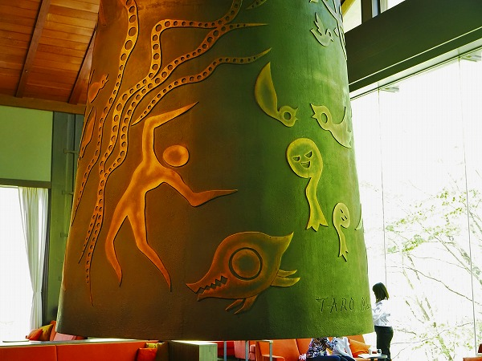
もちろん太郎印のレリーフがたっぷり設えてある。
個人的には色のない太郎作品、案外悪くないな、と思ってしまった。
それもこれもこのホテルのラグジュアリーな雰囲気と窓の外にある奥入瀬の緑がマッチしているからなのかも知れない。
更に別の場所にも太郎の大暖炉がある。
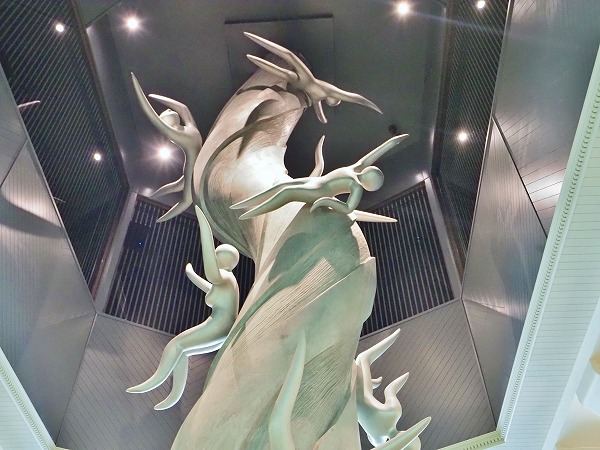
こちらの方が太郎っぽさ全開ですね。
更に屋外には…
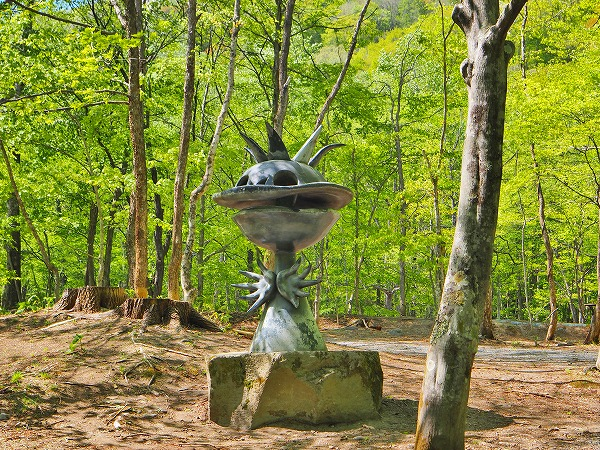
河童のような作品が。
図らずも奥入瀬の地で3つも太郎作品に出会えるとは、何とも幸先の良い旅の始まりではないか。
このホテル、実に親切で宿泊客でもない私にも「車椅子お使いになりますか？」などと気を使ってくれる素晴らしいスタッフさん達であった。
感謝でございます。
で、再び車で奥入瀬渓流をドライブ。
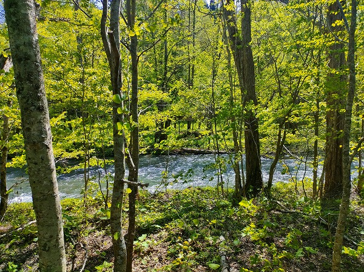
本当に車道からも目の前に渓流が見える。
こんな凄い所、中々ないと思う。
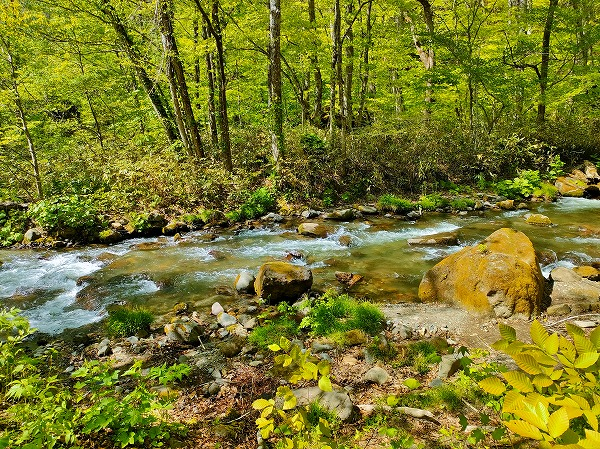
ドライブスルー渓流ですよ。
車を運転している分には足の痛みも無いので非常に快適な奥入瀬観光であった。
そして渓流を堪能しているうちに十和田湖へ。
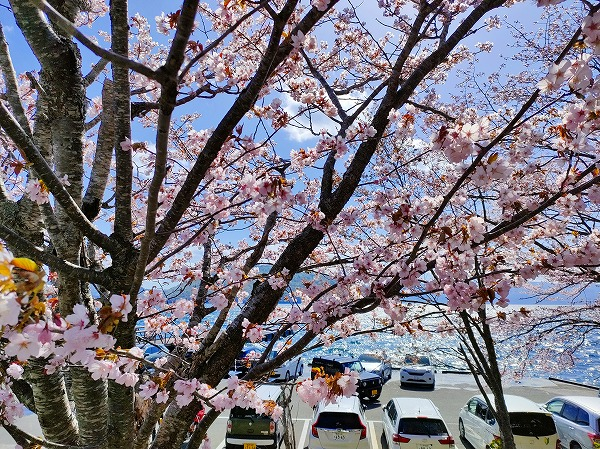
この日は風が強く、湖面は激しく波立っていた。
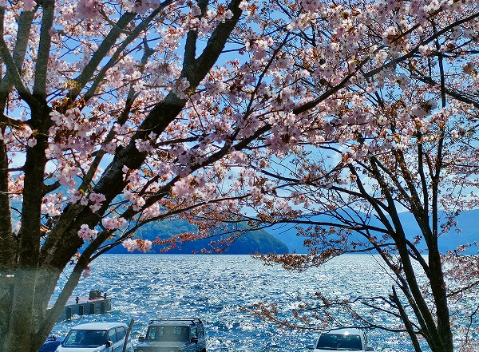
東京ではすっかり散ってしまった八重桜も満開を迎えており、強い風にも散る事なく耐えていた。
おっと、
ここからが本題です。
田沢湖から、奥入瀬渓流沿いの道とは違うルートで八戸方面に戻っていたとき、
奇妙なモノリスのような建物が視界の端に映った。
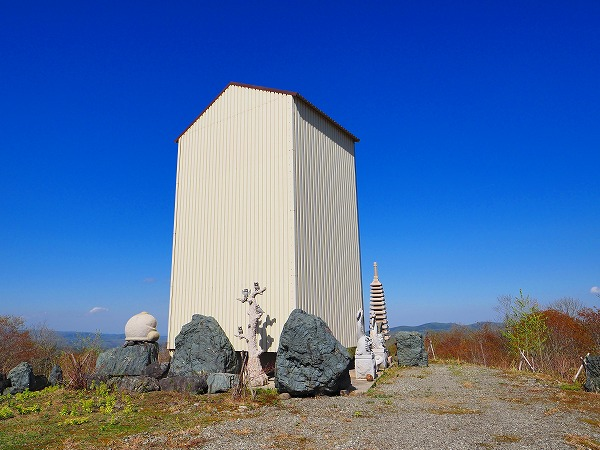
長年、
珍寺ホークアイを自称する不肖私。
周辺のアイテムからピーン！ときたわけですよ。
「コレはデカい観音像が納まっているのでは…」と。
ちなみに周辺にはここの説明や看板など一切ない。
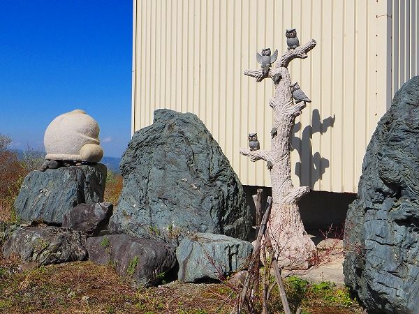
周囲には石材や彫刻物が脈絡のない感じで置かれている。
誰かいるのだろうか、と思い、まだ痛みの残る足を引きずりつつ妙に縦長の小屋に向かった。
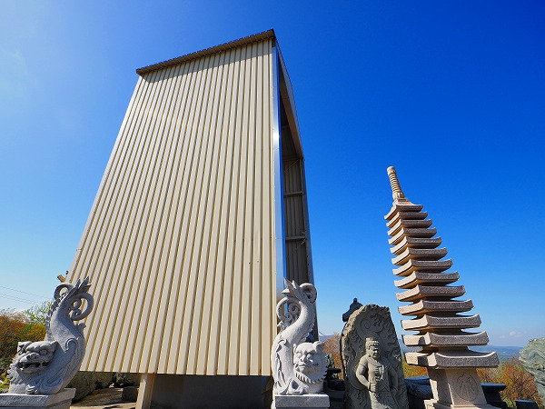
小屋に近づく。
車道と反対側の部分だけが開口しているようだ。
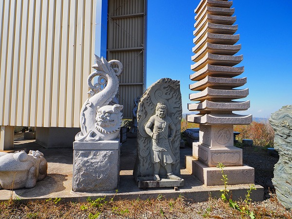
十三重塔や不動明王、そして尻尾が魚になっている人魚狛犬とかカエルとか
雑然とした品揃え。
そして回り込んでみると…
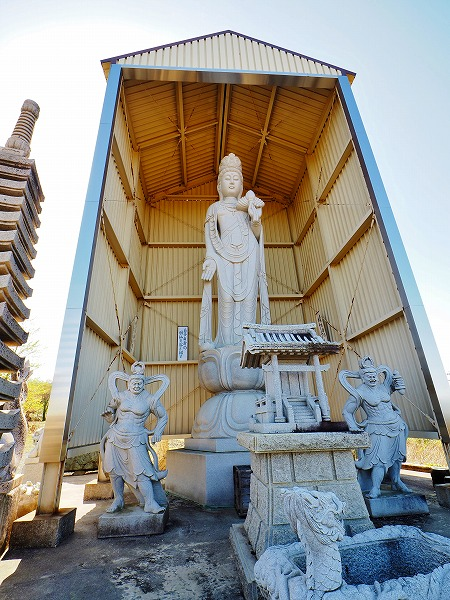
ビンゴ！
やはり
大きな観音像であった。
台座だけで2メートル以上。像高は4～5メートルと言ったところだろうか。
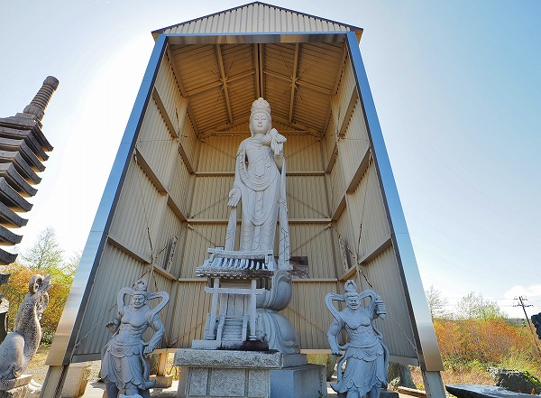
こんなに大きな観音像が誰も訪れないであろう原野の中に建っていること自体驚きである。
せめて奥入瀬渓流とか十和田湖畔にでもあればそれなりに知名度もあったろうに。
いや、かえって顰蹙を買っちゃうのかね。今は。
左右には仁王像。そしてその間には祠が置かれている。
いずれも最近造られたものらしく、あまり汚れていない。
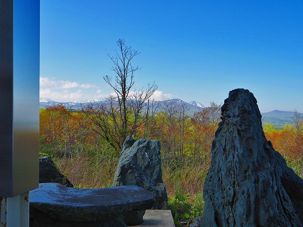
目の前には果てしない原野が広がっている。
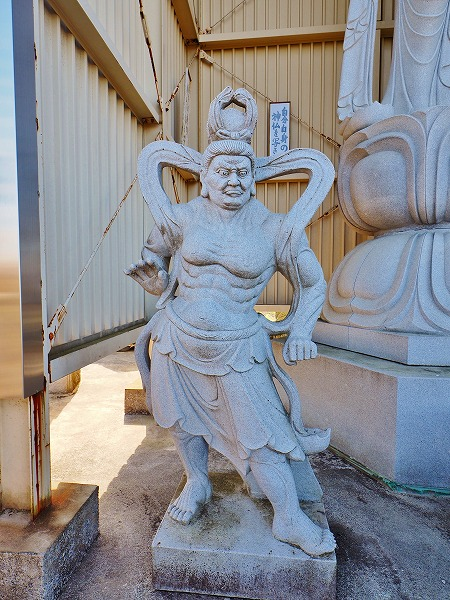
汚れてない、とは言ったものの台座辺りはそれなりに黒ずんでいる。
一体誰が何の為にこのような場所に大観音像を設置したのだろう？
判っているのは青森の山の中に大観音がポツンとおわす、という事だけ。
つまり5W1HのWhere（どこ）とWhat(なに）しか判らないわけだ。
しかしこれまでも数々の意味不明物件を手掛けてきた私である。
残りの疑問は
状況証拠から有り余る想像力（夢想力か？）で補うしかあるまい。
まずWhen（いつ）。石仏や小屋の状態から建立時期はある程度想像がつく。
恐らくここ数年から十数年以内だろう。
次にWhy(なぜ)、について。これはサッパリわからない。
そもそも周辺にはな～んにもない原野が広がっているだけ。
先程の渓流や湖と違って訪れる人もないこんな場所に観音像を建立する意味が判らない。
ただし周辺の石像の統一性のなさ、庭石のような石が無造作に置かれている様からして、石材業者の置き場、というケースも捨てきれない。
となると売り物の観音像をここまで覆屋を建ててまで保存するかな、という疑念は拭いきれない。
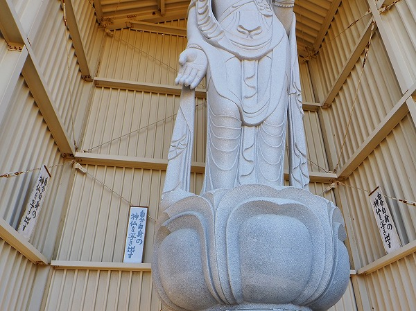
観音像の周りには
「自分自身の神仏を写し出す」とある。
コレがWhyの答えなのかも。
どこの誰かも知らないけれど。誰かが自分自身の信仰のためにひっそりと大観音を建立したのかも知れない。
とすればすぐ近くにある観光名所のような場所ではなく、誰も見向きもしない場所に敢えて建立するのも納得できる。
そして内壁の片隅にあった写真やら印刷物。
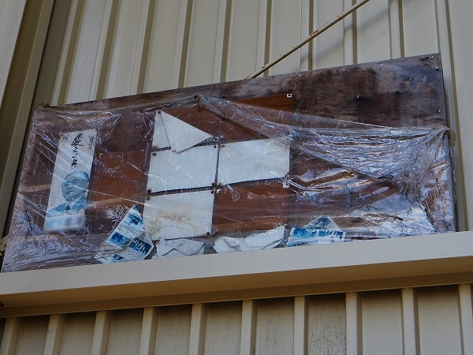
ほとんど色が抜けて見えないのだが、辛うじて見える範囲から最後のWho（だれが）のピースが浮かび上がってくる。
某元国会議員の印刷物がある。
ということはこの某元国会議員かその関係者が建立したのでは、と想像してみた。
しかしこの方を調べてみたら、青森が地盤の政治家ではなかった。
政党名も記載されていたが、今は解党してその後どうなったのかも良く判らない政党だ（勉強不足でスンマセン）。
勝手に想像するにこの観音像を建立した人はこの元議員に何らかのシンパシーを感じていたのではなかろうか。
違ってたら御免。
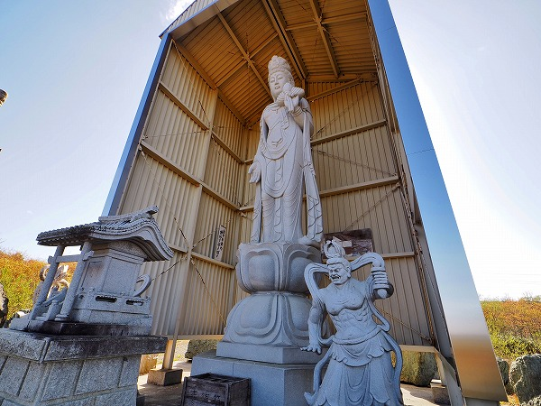
一切合切謎の観音像だったが、それはそれで色々な想像力（妄想力）が膨らむ案件だったので個人的には素晴らしかったです。
ありがとうございました。感謝です。
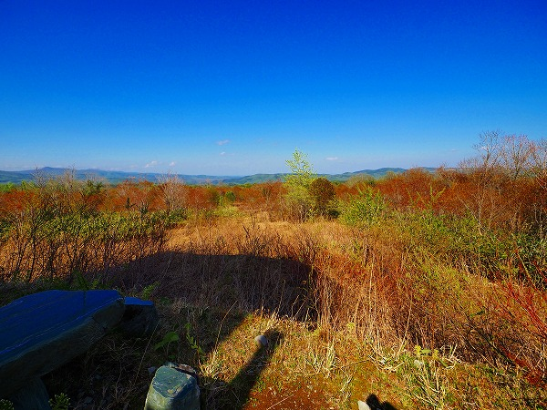
観音サマが見ている風景。
そこには覆屋の影がクッキリと刻まれていた。
この後、再び接骨院に行き治療。
何とか旅の終盤には朝市や
蕪島神社にも歩いて行けました。
過去最大の困難な旅だったのは間違えないっす。
で、その痛みの原因と結末は…続きは珍寺大道場メンバーズシップチャンネルでご報告致します（そんなのないって）！